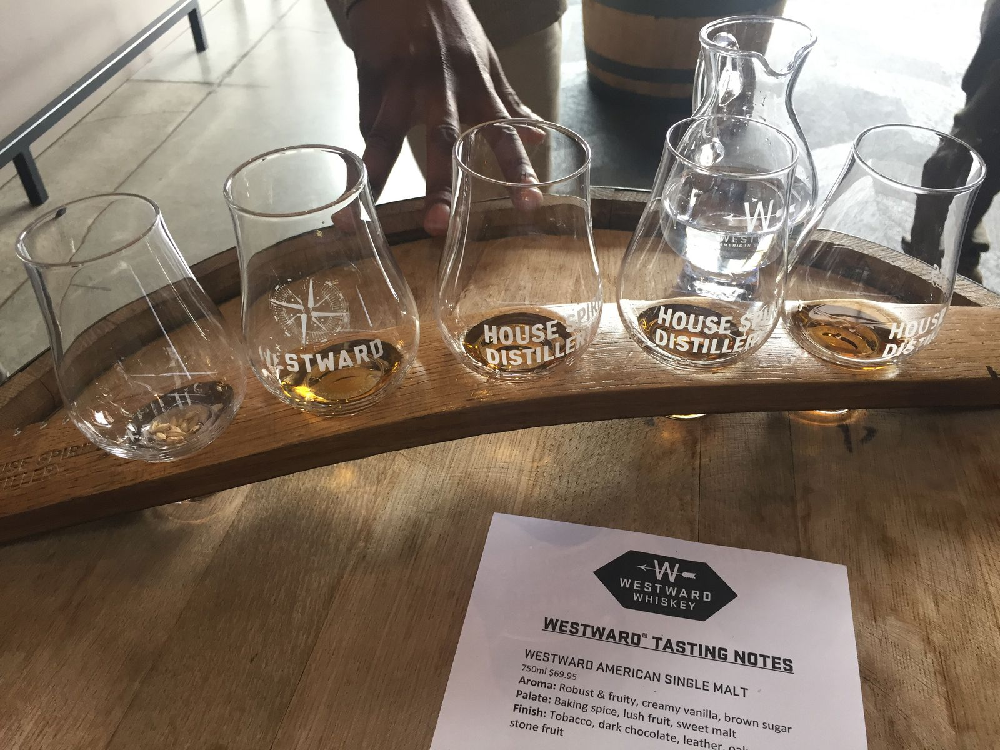
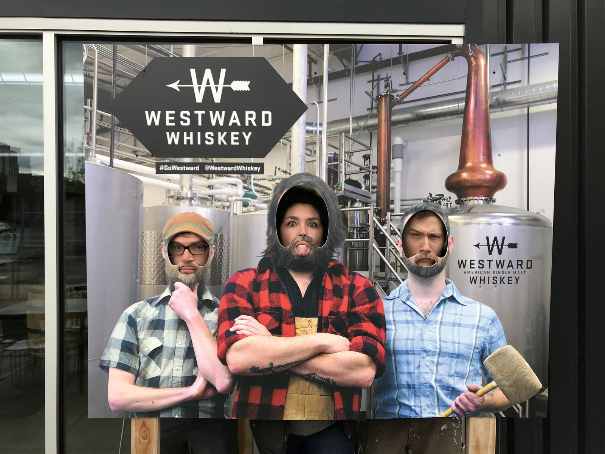

Whiskey Tasting in East Portland
A friend told me that very good water in east Portland has caused several distilleries to spring up in that area. I don't know what good water means, but I'll take it as an excuse to go whiskey tasting.
We chose to go to Westward Whiskey, where our host Nathaniel gave us a great show. He wore a light button down shirt with giraffes all over it. His scruffy dreads complemented his extremely jubilant affect, as he danced to the music playing in the distillery while describing to us the different spirits.

I opted for the four whiskey tasting, while Zach and Nicole split the spirit tasting and cocktail tasting. I got their classic American single malt whiskey, stout whiskey, rum barrel whiskey, and cask strength (120 proof) whiskey. They were all good.
